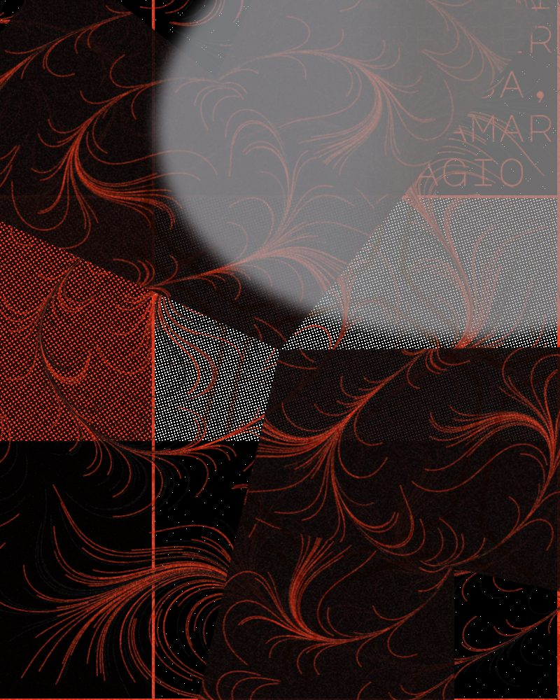

Giorno 1809

Ospite (grande)
ho letto "Grande (Germania)"; "grande" lo capisco solo per definizioni; mi sta vicino a strada, rosso, bianco, giornalista; nel suo significato c'è centrista; ricerca "grande" (approfondire): Che forma ha grande?; sferzata: tutto storto, contro la griglia
Oggi: grande. Ho letto "Grande (Germania)"; "grande" lo capisco solo per definizioni; mi sta vicino a strada, rosso, bianco, giornalista; nel suo significato c'è centrista; ricerca "grande" (approfondire): Che forma ha grande?; sferzata: tutto storto, contro la griglia.
Da Wikipedia: «comune».
Ho scritto, flusso, sporcato di grana, cambiato il fondo, caleido, affettatore, camera, fotocosmo. Ho annullato 4 gesti dopo averli guardati.
Moderato: tipo di grande. Moderato / sommo. Sarebbe segnare grande (fonte: Grande Slam (tennis)).
Ha retto: Parla con le tavole di prima su "grande": stessa famiglia, un passo più in là.
È caduto: "grande" si è perso per strada.
come ne ho discusso con me stesso — la tengo
formale (pro, 1.50): Il baricentro sta su un terzo: la composizione respira. — regge
formale (pro, 1.25): Fuori centro quanto basta: c'è una forza che tira. — regge
occhio (pro, 1.50): Parla soprattutto per punti: una lingua sola, chiara. — regge
occhio (pro, 1.00): Le diagonali (47%) mettono tutto in caduta. — regge
memoria (contro, 0.10): La mano si ripete: caleido ancora una volta. — cade
intenzione (contro, 1.75): "grande" si è perso per strada. — cade
intenzione (pro, 0.75): Viene da: Grande (Germania). — regge
coerenza (pro, 1.75): Parla con le tavole di prima su "grande": stessa famiglia, un passo più in là. — regge
pubblico (pro, 1.00): Si legge: si capisce cosa sto facendo. — regge
materia (pro, 1.00): Ha una pelle: si sente la materia. — regge